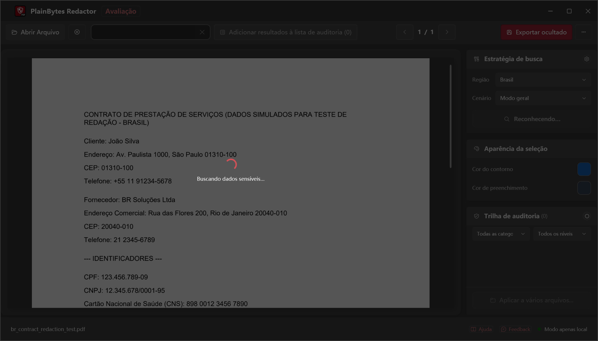
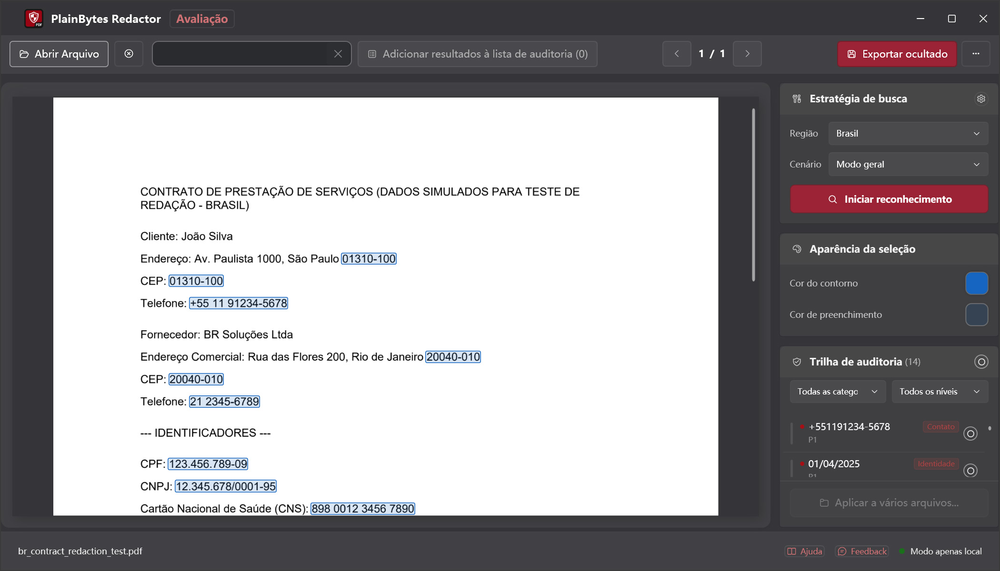
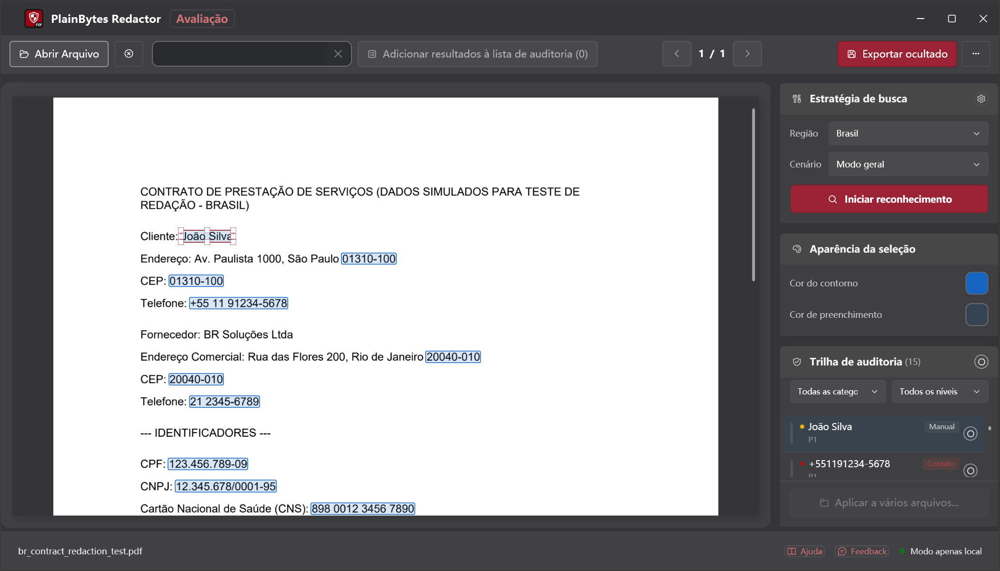
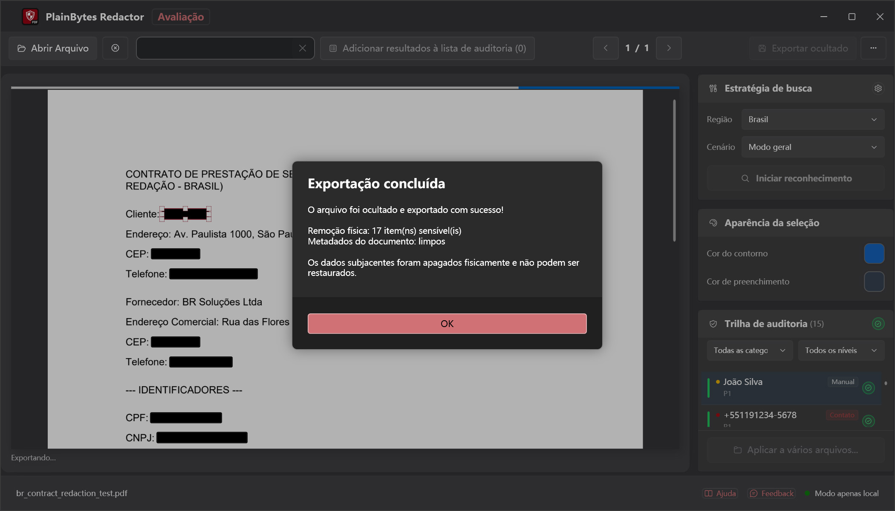

01
Abrir e analisar
Carregue um PDF e execute a detecção para os formatos da sua região.
PlainBytes Redactor
PlainBytes Redactor roda inteiramente no seu computador — sem upload na nuvem, nenhum serviço de IA vê seus arquivos. Detecção automática para formatos de identificadores de 28 países, mais revisão manual antes de exportar.
Teste grátis de 10 dias · Compra única · Sem assinatura
Como funciona

Carregue um PDF e execute a detecção para os formatos da sua região.

Veja cada item sinalizado com sua categoria de risco.

Adicione, remova ou refine antes de finalizar.

Conteúdo e metadados removidos permanentemente.
A maioria das ferramentas de redação — especialmente as com IA — envia seus documentos a um servidor antes de encontrar e remover informações sensíveis. Para quem está sujeito a confidencialidade, privilégio ou independência de auditoria, esse risco não deveria ser necessário só para redigir um arquivo.
PlainBytes Redactor faz toda a detecção e processamento no seu dispositivo. Seus arquivos nunca saem do computador — sem conta, sem sync, sem servidor.
Conformidade
Arquitetura local-first alinhada aos principais frameworks de proteção de dados — sem transferências a terceiros durante o processamento.
Apoia o cumprimento dos requisitos da Lei Geral de Proteção de Dados, supervisionada pela ANPD. Os dados pessoais são removidos de forma permanente do fluxo de conteúdo do PDF — sem transferência a terceiros durante o processamento.
Proteção de dados pessoaisApoia o cumprimento do artigo 17.º (direito ao apagamento), supervisionado pela CNPD em Portugal. O processamento completamente local garante que nenhum dado pessoal é transmitido a serviços externos não autorizados.
Direito ao apagamentoA proteção de dados está integrada desde a conceção do produto. O processamento local, a eliminação física de dados e a ausência de dependência da cloud correspondem ao princípio de «proteção de dados desde a conceção», previsto tanto na LGPD como no RGPD.
Proteção desde a conceçãoNota: O PlainBytes Redactor é uma ferramenta concebida para apoiar fluxos de trabalho conformes com a proteção de dados. Não constitui aconselhamento jurídico e não foi obtida qualquer certificação formal por parte de terceiros.
Para advogados
Redija SSN, dados financeiros e outros PII antes de e-filing ou compartilhamento discovery, sem passar arquivos de clientes por nuvem de terceiros.
Para contadores
Redija números de conta, SSN e detalhes financeiros de clientes antes de compartilhar papéis de trabalho de auditoria, declarações fiscais ou relatórios de fim de ano — sem passar dados de clientes por nuvem de terceiros.
Para equipes de RH
Redija valores salariais, SSN e dados pessoais antes de compartilhar cartas de oferta, registros de desligamento ou arquivos de pessoal com auditores, assessoria jurídica ou em resposta a solicitações de dados.